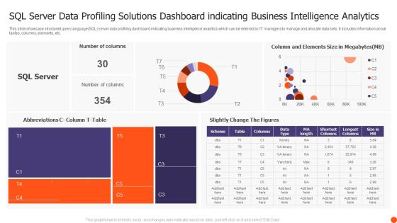
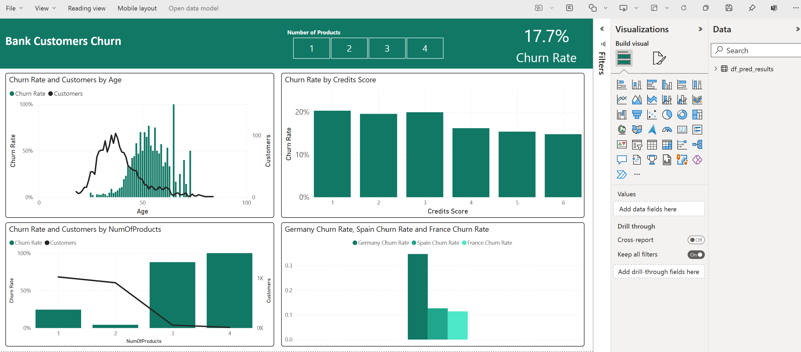
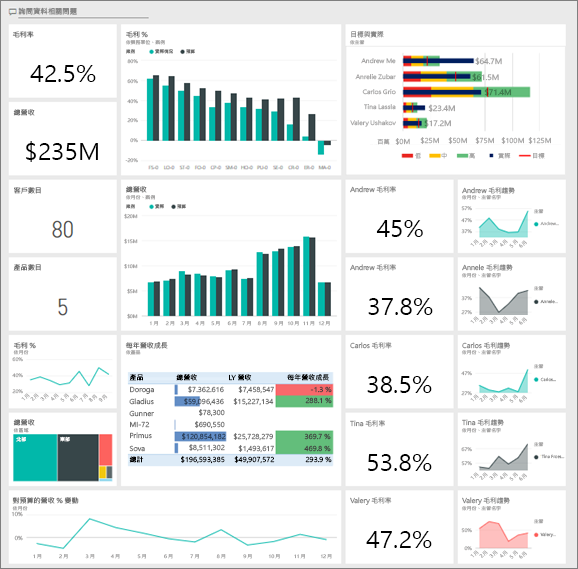

關於我的轉職
憑藉過去在 [原產業] 積累的邏輯思維，我目前專注於數據科學工具鏈的應用。我擅長透過 **SQL** 進行高效數據抓取，利用 **Python** 實作自動化分析，並以 **Power BI** 將複雜數據轉化為易於理解的商業洞察。
專案作品集

Database Design
SQL Server 商業數據庫優化
針對電商平台設計星型架構 (Star Schema)，解決了原始資料冗餘問題，並透過 Index 優化將查詢效率提升了 60%。
查看技術文檔 →
Data Science
Python 客戶流失預測分析
使用 Pandas 處理萬筆去識別化資料，並透過 Matplotlib/Seaborn 繪製特徵相關性矩陣，成功識別出三個關鍵流失風險指標。
查看程式碼 →
Visualization
Power BI 營收動態儀表板
整合多種 Excel 資料源，利用 DAX 建立同比/環比分析。提供互動式篩選器，讓決策者能一鍵切換不同地區與產品線的表現。
瀏覽互動報表 →